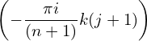

6.2 Define DST via DFT
Let us introduce the Discrete Sine Transform (DST) by odd extending a given real
number sequence and then using the DFT of the extended data to define DST. There
are several slightly different ways of odd extending a given sequence and thus
different types of DST. Given a n = 3 real number sequence (a,b,c), one frequently
adopted odd extension is (0,a,b,c,0,−a,−b,−c,0). This odd extension is illustrated
in Fig. 5.
As illustrated in Fig. 5, after the old extension, the total number of points is
N + 1 with N = 2(n + 1). Then DFT use the N points with index j = 0,1,…,N − 1
as input. Since the input are real and odd symmetric sequence, the output of this
DFT is an odd sequence of purely imaginary numbers. Next, let us prove this. The
DFT in this case is given by
where hj′ is the odd extension of the original data hj. For j = 1,2,…,n, the relation
between hj′ and hj is given by
For j = n + 2,…,N − 1, the relation is given by
Noting that h0′ = 0 and hn+1′ = 0, then expression (58) is written as
 | (61) |
Using N = 2(n + 1), the above expression is written as
 | (62) |
Using the relations (59) and (60) to replace hj′ by hj, the above expression is
written
 | (63) |
Change the definition of the dummy index j in the above summation to
make it in the conventional range [0 : n − 1], the above expression is written
as
Hk = ∑
j=0n−1h
j exp−∑
j=0n−1h
n−1−j exp . .
|
Defining j′ = n − 1 − j to replace the dummy index in the second summation, the
above expression is written as
which is a purely imaginary number. Expression (64) also indicates Hk has the
following symmetry
i.e. odd symmetry. Therefore only half of the data for Hk with k = 0,1,…,N − 1 need
to be stored, namely Hk with k = 0,1,…,N∕2. Expression (64) indicates that H0 and
HN∕2 are definitely zero and thus do not need to be stored. Then the remaining data
to be stored are Hk with k = 1,2,…N∕2 − 1, i.e. k = 1,2,…,n. Following the
convention of making the index of Hk in the range [0 : n− 1], we define Hk′ = Hk+1.
Then
with k = 0,1,2,…n− 1, which is the index that we prefer. Finally, the so-called type-I
Discrete Sine Transform (DST-I) is defined based on Eq. (66) via
 | (67) |
with k = 0,1,2,…,n − 1. This is the RODFT00 transform defined in the FFTW
library.